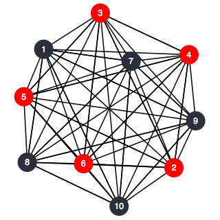
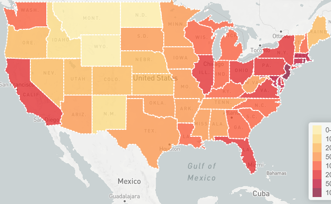
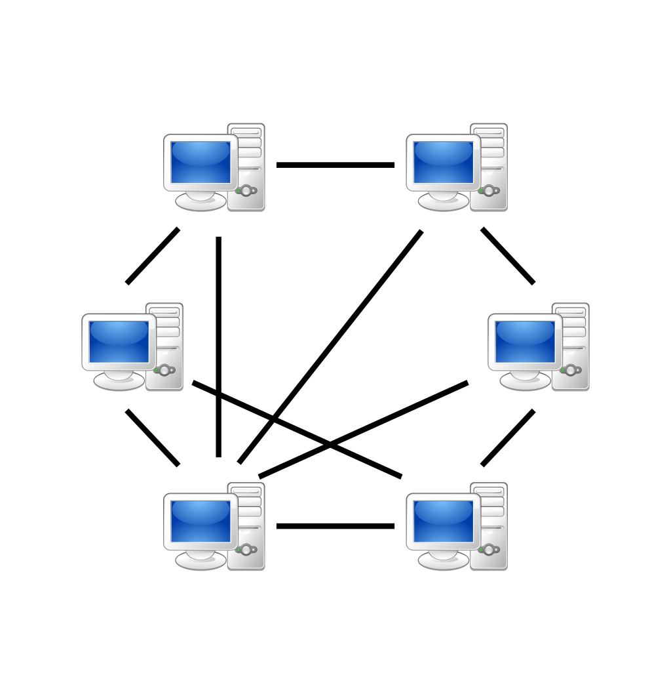

Selected Projects
Welcome to my blog. I am a motivated learner.
Twitter Simulator
Source Code DemoImplemented a Twitter-like web service to allow users to share their life by developing WebSocket APIs using Elixir with Phoenix framework...
Read more →

Implementation of Gossip Protocol in Distributed Network
Source CodeGossip protocol can be used both for group communication and for aggregate computation. The goal of this project is to determine the convergence of such algorithms through a simulator based on actor model written in Elixir...
Read more →

US Pollution Level Search System
Developed a Searching system which could provide visulization of US pollution data. The system enable users search pollution level depends on different time periods, pollutants and geographical regions...
Read more →Java Code Compiler
Source CodeImplemented a Java code compiler to scan and parse code, check variables and expressions types, and generate Java byte code...
Read more →

P2P File Sharing Software
Source CodeDeveloped a P2P File Sharing Software similar to BitTorrent to raise download rate using Java socket programming with multithreading design...
Read more →